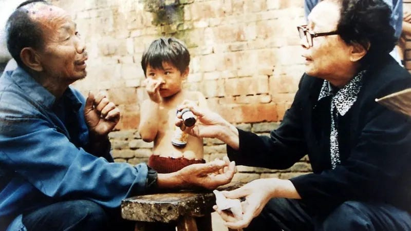
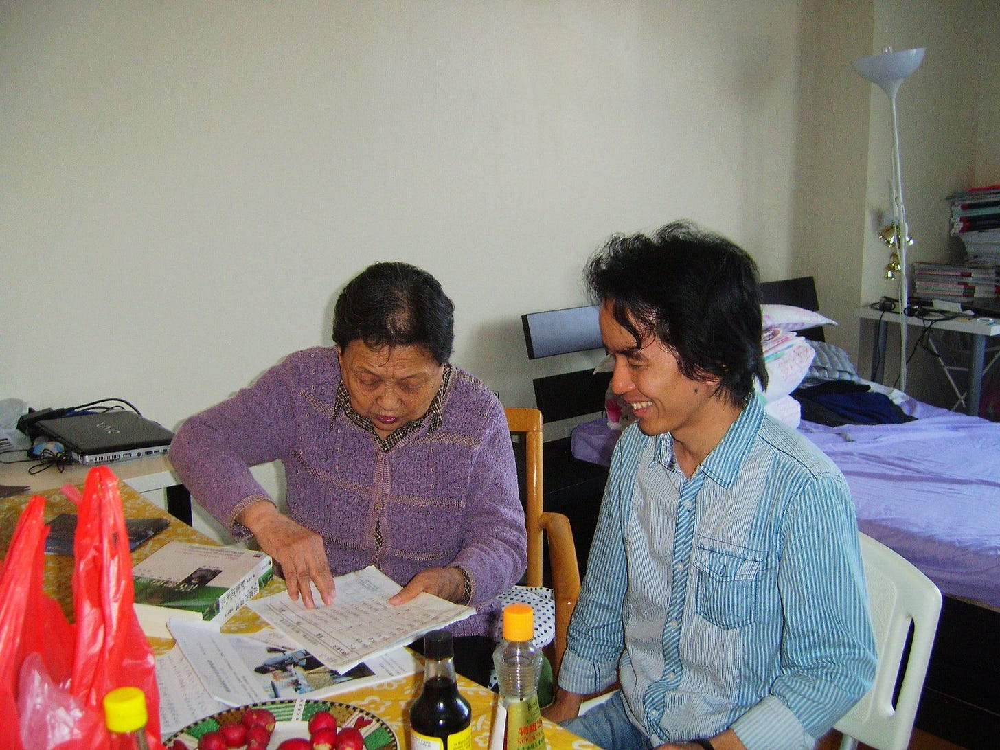
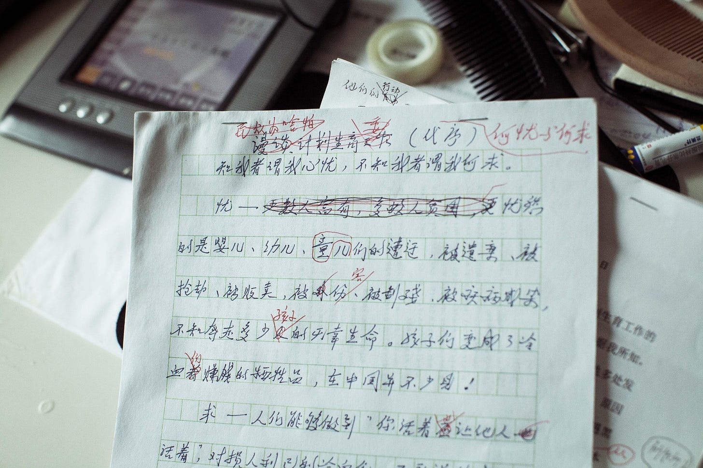
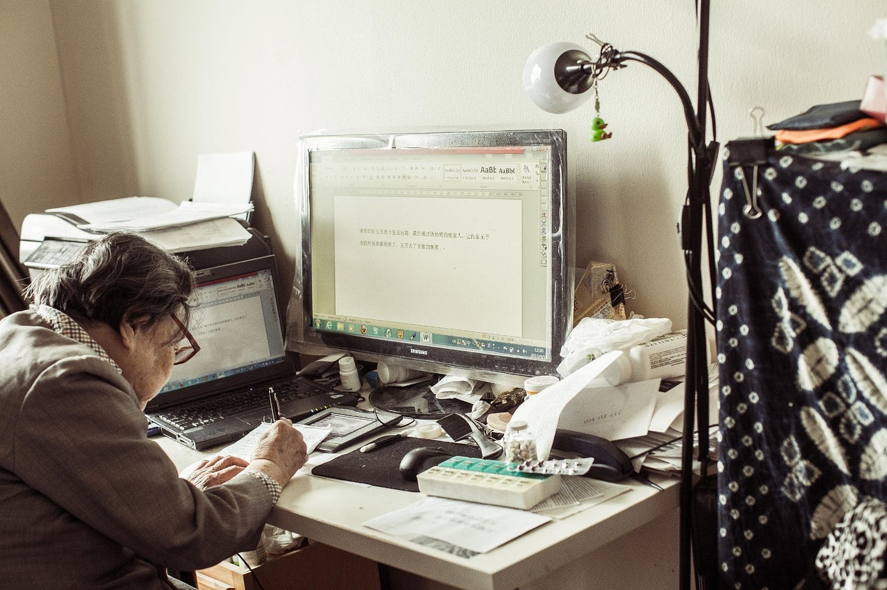
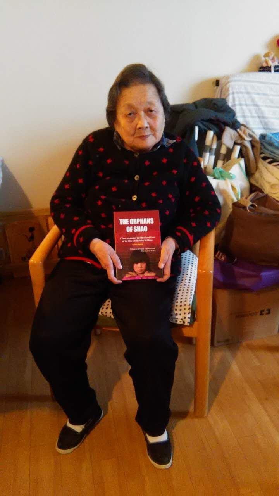

高耀潔 星常照 - WOMEN我们
高老師去國流亡，我最終流落港島。中國之大，我們一老一少，竟然只能被迫放逐。或許，這也是我和高老師十幾年來保持密切聯繫的原因之一吧。我們，有許多可以交心的話。
Dec 19, 2023

Figure 1: 高耀潔醫生在指導感染艾滋的村民。圖片來源：GETTY
「WOMEN我們」編者按：作者龐皎明是新聞人，現居香港。他曾因監督性報道而不得不兩度改名、辭職，2011年，他發表了調查報道「邵氏『棄兒』」，揭露湖南地方計生部門以違反計劃生育政策為由、強行抱走嬰幼兒，並提供給歐美人士付費收養的現象，因此不得不離開中國大陸。也許是同樣因揭露真相而流浪的經歷，他是高耀潔寓居美國後，至臨終前十餘年間，保持密切聯繫的友人。原文是中文繁體字，故WOMEN我們 決定用繁體發佈。
撰文 龐皎明
（一）
我步入新聞江湖時，高耀潔老師已名滿天下。在其他人的口中，高老師有許多稱呼：高醫生、高教授、高先生、高媽媽，高奶奶等等。我以「高老師」稱呼高耀潔女史，高老師最初叫我爲「龐先生」，見面後，我成了她口中的「小龐」。
未去國之前，高老師因宣傳防治艾滋病而廣爲人知。她真正「開掛」一般的人生，是在退休之後。退休前，高老師是名婦科腫瘤專家，較少介入社會公共生活。於1990年代退休後，她揭露了河南一些地方政府推行「血漿經濟」。在近乎瘋狂的非法賣血及不正規採血的過程中，不少賣血民衆因此感染了艾滋病毒。而進入河南各大醫院血站、血庫的血漿，也因此受到了病毒污染。地方醫療系統乃至整個政府體系，對此幾乎熟視無睹而疏於管治，艾滋病人、艾滋病孤兒、艾滋病村，悄然成爲河南一道隱密的殘酷景觀。高老師看不得如此「血禍」繼續橫行中原，出於醫生的良知，出於對苦難的不忍人之心，她勇敢的撕開了這暗幕一角。也正是高老師等醫生的勇氣，讓世人看到了河南艾滋病問題之嚴重。因積極介入艾滋病防治，給「艾滋病恐懼（症）」祛魅，高老師獲得了「中國民間防艾滋病第一人」 等殊榮。
2007年，香港天文學會前會長楊光宇（Bill Yeung）先生發現了38980號小行星。楊先生敬重高老師對防治艾滋病的努力，將新發現的小行星冠以「高耀潔」之名。
中國社會的弔詭處，是一個人就算譽滿天下，但如果得不到權力垂青，在官員眼裏便不值一文。高老師常年揭露、抨擊河南地方當局對艾滋病蔓延的失職瀆職，得罪地方官員自然在所難免。而隨著國際媒體介入報道，中國各級政府部門對艾滋病防治的疏忽也成爲國際醜聞，就如河南當局對最初艾滋病泛濫漠不關心一樣，對地方官員監視、騷擾與打壓高老師，更高級別的官員同樣放任行事。經年的打壓與騷擾，讓高老師在河南鄭州都無法擁有一張安靜的書桌。子女甚至也因此受到牽連，最終導致母子斷絕關係。爲了保存及整理艾滋病患者的資料，2009年5月，已80多歲高齡的高老師匆匆告別了河南。幾經輾轉，於當年8月抵達美國。
流亡海外一年後，高老師得到美國哥倫比亞大學政治學教授黎安友（Andrew J. Nathan）相助，終於在哥倫比亞大學附近尋得一處公寓。寓居紐約十餘載，高老師最終還是沒能重返她深愛的祖國。
（二）
2012年6月，我在美國旅行時經停紐約。不少師友希望我去探望高老師，並代爲送上他們的問候。6月24日，晚上8時27分，我收到了高老師的郵件：
龐：
我很想見你，我26下午3時，看醫生，你6-7時來可以嗎？來時不要吃飯，我給你下餃子吃，已準備了，行嗎？
很快，高老師又發來了一封信：
我在門上拴個椅子，若你6時來了，（我）還沒有回來，你坐下等著。
看著信件，我既感激又覺得可樂。高老師一生爲他人著想，竟然擔心我站在門外等候，她都於心不忍。
下午6時，在曼哈頓哈林區，我準時敲開了高老師在百老匯3333號公寓的房門。「高老師，我是小龐呵。」
「請進，請進。」高老師招呼我到屋裏，她抬起手摸了摸我的手，「太瘦了，太瘦了。」我真是太激動了，只是咧著嘴笑，「是有點瘦，有點瘦。」
見面頭一天，高老師不慎摔了一跤，但跟我相見時，心情無比爽朗。她穿著格子襯衣，外面套了件紫色薄毛衣。看得出來，爲了這次見面，她特地梳妝了一番。
公寓房間不大，屋內簡陋但極乾淨，書籍及雜物堆放得隨意。筆記本電腦、書籍、記事本歪歪扭扭的擺在宜家風格的檯面上。一個紅色的塑料袋敞開著，袋裏裝著許多膠囊藥丸，那是高老師日常所需的藥品。
高老師請我和隨行的友人坐下。房間略顯擁擠，我和高老師坐下聊天時，同行的朋友只好站在旁邊。那些託付代爲向高老師問候的朋友，我一一說出了他們的姓名。高老師很高興，又讓我代爲問候這些師友，並詢問朋友們的近況。
高老師拿出一本記事本。「小龐，你來簽名。」她指著記事本說，她要記住誰何時來探望過她，何人託我問候她。「我的身體很壞，這也可能是我們最後一次見面。」
簽完名，高老師拿出她的自傳《高潔的靈魂：高耀潔回憶錄（增訂版）》送給我。那是一年多前在香港出版的自傳。以83歲高齡踏上流亡路，高老師希望在不受審查之下，講述她的人生故事，她的所見所聞。
我跟高老師說，我也寫了一本小書，暫定名叫《邵氏棄兒》。書中披露的，是湖南等地的計生部門，搶奪農民的「超生」小朋友送入福利院，再被外國家庭收養的故事。這時候，高老師才知道，她一直關注的報道的作者「上官敫銘」，就是她認識的「小龐」。
早在我們見面前，2011年5月21日，高老師曾給財新傳媒寫了封信：
讀了貴刊發表的《邵氏嬰兒》報道，深為震動，也為你們的勇氣和社會責任心所感動。你們終於揭開了中國一些地方計劃生育和兒童福利院的黑幕之一角，這是每個有天良的人都無法容忍的。
但是，這僅僅是「一角」而已，實際上的問題要嚴重得多，範圍也廣得多。
……
感謝你們的報道，希望這個報道能繼續深入。我在美國繼續關注你們有意義的工作。
提到我的書稿，高老師來了興致，她鼓勵我早點將書稿出版，好保留下一份歷史檔案。
那天，高老師給我準備的，是從華人超市買來的速凍餃子。她早早就將餃子解凍，水滾後，她麻利的往鍋裏倒。「我叫你不要吃飯，留著肚子多吃一點。」
三盤水餃，還有一小碟醋，一盤紅皮的「心裏美」，成了高老師招待我家宴的全部。我並不喜歡吃水餃，但那卻是最難忘的一次水餃餐。高老師將她盤裏的餃子夾給我，「太瘦了，你要多吃一點！」
飯後，高老師給我倒了杯水。我們又閒聊了許久，她談了對一些時事的觀點，對幾個人物做了點評。她又交代我回國之後，要幫她聯繫一些人，辦一些事。我一一記下後，依依不捨向高老師道別。
那是我終生難忘的一餐。

Figure 2: 2012年6月，高耀潔（左）在紐約寓所與作者（右）會面。
（三）
2012年7月初，我自美國返回北京。回到家，打開電腦查看郵件，即收到了高老師的數封未讀郵件：
小龐：你平安到家了？
小龐：可惜我們談話太少了……
小龐：前天你往我老郵箱發了一封信說：寄往我博客內的三篇文章，我當即回信說，博客己停3年多了，請你把文章寄往此郵箱。48小時過去了，未見（你）回音我很不安！！！
高老師的老郵箱是在Yahoo註冊的。我和她此前在雅虎的郵箱通過信，而現在常用的郵箱則是Gmail。我沒有給高老師的Yahoo郵箱發過信，我知道發生了什麼事-–—我和高老師的若干通信，肯定是被某些「有心人」看過了。高老師此前已經提醒過我，萬事小心，特別是重要的資料不可貿然通過網絡傳送。這也是數年前，她只好帶著裝有艾滋病調查資料的硬盤，匆匆離家出走的原因。
「小龐，你太天真了。我有70年可怕的經歷！！！」高老師使用了三個感歎號，想必她真的生氣了吧。祕密通信的自由被侵犯，我心裏不是滋味。
高老師說她有「70年可怕的經歷」，這絕非虛言。1927年12月19日，高老師出生於山東省曹縣高新莊，本名高明魁，字耀潔。高家在當地乃是望族。幼年，高老師過繼給寡居的大伯母徐氏。徐氏是清末政治人物、光緒十八年五月授翰林院編修的徐繼儒長女。童年時，高老師即進私塾，因外公是當地大儒，她接受了傳統的儒家教育。雖已進入民國，但高老師卻是個纏過小腳的女人。
1939年，因當地兵災，高父不得不攜帶家人舉家逃亡，最終遷居河南開封。1950年，高老師考取國立河南大學醫學院，畢業後，正式成為一名醫生。
「你年輕，不瞭解。文革給我留下多處傷痕。」高老師給我講述她的人生故事時，總喜歡強調我太年輕。
抗日戰爭及國共內戰相機結束，和平之後的中國，迎來的卻是各種運動。在文革期間，高老師遭到紅衛兵多次毒打，被列為「階級敵人」、「官僚地主家庭的孝子賢孫」而遭受攻擊。高老師的丈夫、兒子也都受到牽連，被下放到五七幹校勞動改造。
高老師被毒打，被遊街，被關進醫院的太平間，和屍體同處一室。在紅衛兵的一次武鬥中，她的胃被打傷後大出血，後來切除了大部分胃部才保住了性命。時年十幾歲的兒子郭鋤非也受到牽連，由此埋下了此後兒子「磕頭斷親」（指兒子在壓力下，磕頭請母親不要赴美領取美國人權組織Vital Voices頒授的年度人權獎項）的心結。實際上，高老師母子並未真正斷絕親情，兒子也曾赴美探望她。所謂的斷親，只不過是特殊情境下的特殊表達而已。
文革進入尾聲時，高老師的冤案得以平反。1977年8月，在中國共產黨第十一次全國代表大會上，黨中央正式宣佈「文化大革命」結束。翌年，曾經迫害高老師一家的鄭州市委和市政府，以及衛生局等相關部門的領導，陸續登門道歉。當局期待以此對文革時期的癲狂行爲一筆勾銷。
文革結束後的中國，百廢待興，在「經濟建設爲中心」的指引下，中國也走上了一條逐漸正常化的發展道路。然而，在1990年代，在中原大地，在華中、華北等多個省區，竟悄然興起以賣血牟利的灰色產業，鏈條上有農民等民衆、「血頭」中介、醫院血站及血庫等，
介入對艾滋病問題的調查及防治後，特別是揭發河南的「血漿經濟」是艾滋病在農村迅速擴散的元兇，以瞭望者的姿態毫不畏懼的「吹哨」，讓高老師獲得了極多榮譽，不但得到了中國官方及民間的褒揚，事蹟也被國外媒體廣爲報道。
2003年初，高老師獲選中央電視台評選的「感動中國2003年十大年度人物」之一。她「以博愛感動中國」，頒獎詞寫道：
這是一位步履蹣跚的老人，但她在實現「但願人皆健，何妨我獨貧」的人生理想的道路上卻邁著堅定的腳步。她以淵博的知識、理性的思考驅散著人們的偏見和恐懼，她以母親的慈愛、無私的熱情溫暖著弱者的無助冰冷。她盡自己最大的力量推動著人類防治艾滋病這繁重的工程，她把生命中所有的力量化為一縷縷陽光，希望能照進艾滋病患者的心間，照亮他們的未來。
這種體制內外的良性互動，被一些人士稱爲中國政治生態的「小陽春」。
中國人喜歡取整數。在2008年之前，從1998年至2008年期間，是中國社會氛圍最爲開明寬鬆的政治「小陽春」時期。實際上，它跨越的時間更長，可籠統概括爲「江胡時期」，即江澤民主政後期及胡錦濤掌權初期，這也正是中國媒體的「黃金十年」。
2004年11月30日，在「世界艾滋病日」前夕，時任中共總書記胡錦濤在在北京佑安醫院考察，與艾滋病患者親切握手。這是中共建政後首次，這也是經過近十年光景，在高老師等專業人士，在媒體不懈的連續報道下，官方與民間的互動。鼓呼十年，才獲得官方正視，可見做事之難！魯迅先生曾說，「可惜中國太難改變了，即使搬動一張桌子，改裝一個火爐，幾乎也要血；而且即使有了血，也未必一定能搬動，能改裝。」十年呼籲換得一次握手，這也算是進步嗎？
這種所謂的官民「良性互動」，在高老師獲得「感動中國」年度人物之後，也得到體現。當年年初，時任河南省委書記、後來升任國務院總理的李克強邀請高老師到省委辦公廳敘談，除了對她獲得殊榮表示祝賀，也探討了進一步做好防治艾滋病工作的舉措。當年年底，國務院副總理吳儀在河南考察艾滋病防治工作時，也與高老師暢談兩個多小時。吳儀還特地囑咐，她從此就是高老師的朋友。
然而，體制如野獸一般，在短暫放開利爪之時，也趁機摩尖了獠牙。高老師雖然獲得「感動中國」的殊榮，但那「黃金十年」也是「維穩體制」構建時期，一切讓當局認爲可引發不穩定的因素，都必須消滅在萌芽狀態。
高老師記錄、揭露河南艾滋病蔓延的真相，爲艾滋病人的權益鼓呼，包括接受海外媒體採訪等行爲，在體制的眼裏，這都是造成「不穩定」的行爲，地方官員對高老師的監控、打壓，在權力邏輯中，這是必然的。2008年北京奧運會落幕，當局享受了萬邦來朝的榮光之後，對不同立場、不同聲音的打壓，不需要再顧及顏面。在遭受了多次羞辱式的監控及管束後，2009年初，既然邦無道，高老師毅然決然去國遠遊。
（四）
回到北京後，我繼續與高老師保持密切聯繫。由於時差的關係，我們多是通信。密則一周數封，疏則月餘一封。
寓居紐約，除了寫作自傳等文字，高老師並未放棄對中國艾滋病問題的關注。她經常給我發送有關艾滋病問題防治的文章，大部分是她對防治艾滋病的觀察及建議。
高老師希望我把她的觀點，讓更多的中國人知曉。在多年的通信中，她不時來信：
我把文章寄上，你10、11月發出，因艾滋病日時間才有人看，對嗎？
馬上艾滋病日來了，更多人能夠瞭解防治艾滋病的知識，也是為了那些鮮為人知冤死的艾滋病人，讓他們的故事能給更多的人知道。希望你能把這些傳給更多的人。
再發去一個瞭解和預防艾滋病的文章。
我把高老師的文章轉發給更多的朋友，貼到了網絡。雖然遠在他鄉，因時常有署名文章出現在網絡等各種載體，高老師在中國的存在感並未消退。
2013年6月，在信件中，我向高老師簡要匯報了近況。「上官」陣亡了，我換了一個新的筆名。「總之，國內新聞界現在真是風聲鶴唳，言論尺度一再被收緊。」
2014年初，高老師再次問到我的書稿是否出版。
我給高老師回覆了郵件。我說，準備移居香港。我問高老師能否給這本小書作序。2013年初，我到香港參加一個研討會，聽聞我寫作了一些書稿，明報出版社的總編輯等朋友，表示有興趣出版。朋友們請我吃飯時，恰逢出版社安排的編輯是高老師自傳《高潔的靈魂》的編輯Nancy女士，如此，大家覺得讓高老師給這本小 書作序，實在是太合適不過了。
高老師欣然接受了委託。她在準備寫序言時，曾給我來信：
我把原稿調出來，把字放大打印，躺在床上細看了一遍，現在基本看完了。這本書寫得很好，在很多地方，教我傷心流淚得看不下去。
又說：
我越看你這本書寫的越好. 如果你要是能加上更多照片, 也讓人們看到。以後, 會和《血殤》那本書一樣， 讀著流淚。
高老師的淚點或許是太低了。關於這部小書，我並沒有跟高老師說太多。她最初半開玩笑的說我「太天真」，預言果然實現了。雖然簽了合同，出版社已經排版並印出樣書，取了書號也做了發行廣告，但這本書並沒有順利面世。這其中的原因，我當然清楚。
我最終離開了生活了十幾年的北京，移居到了中國的「境外」。高老師去國流亡，我最終流落港島。中國之大，我們一老一少，竟然只能被迫放逐。或許，這也是我和高老師十幾年來保持密切聯繫的原因之一吧。我們，有許多可以交心的話。
在書信中，因疾病困擾，高老師常常顯得悲觀。我鼓勵她說，「請您多休息，樂觀一點！政治環境那麼糟糕我們都可以克服，戰勝病魔是小事情。」

Figure 3: 高耀潔給《邵氏棄兒》寫作的序言手稿「何憂與何求」。
（五）
遠隔重洋，她的健康狀況時刻牽動我心。
小龐：近期我在害病，又一個血栓……你還沒忘記我，希望在艾滋病日前你在網上多發幾次防艾知識，謝謝！！！祝中秋快樂！！
小龐：因為我一直生病，很久沒有給你寫信。
小龐：我病一年多了……
小龐：我近來病了，差一點死了。我把住醫院的情況寄給你看。
小龐：我早應該給你回信，因為我的左耳孔出血多日，取了兩次取不完，因此我的左耳失靈。你知道我右耳根本就不好，所以等學生來才給你回信。已經很多天了,可能你著急了。
小龐：近兩天我的病情有好轉，勿念!
有一次，高老師在信件中寫道：
小龐：很久沒有通信了。……告訴你一個不好的消息，在12號，我去醫院，醫生告訴我4月17號的CT檢查中發現我右側卵巢有個囊腫，從我16年婦科腫瘤的經驗看，囊腫也不是絕對不會惡變的。現在正聯繫進一步檢查和處理辦法。我怕麻煩更多人，所以只告訴你。
讀完這封信，內心五味雜陳。高老師身體不好，我又無能爲力，而那句「我怕麻煩更多人，所以只告訴你」，更讓我覺得肩上有泰山壓頂般的壓力。
我委託在美國的朋友，在哥倫比亞大學留學或當訪問學者的朋友，希望他們在方便的時候，幫我去探望高老師。哪怕什麼忙都幫不上，跟她講講話，把她的近況告訴我也好。
高老師的日常，就是吃藥（看醫生）、寫作和回信；除了這三件事，偶爾會客、主動或被動參加一些公開活動及散步，則是非日常的三件事。
旅美之前，高老師已經是譽滿天下的知名人士。有人的地方，就有江湖。高老師寓居美國，也成了一些人士及團體試圖拉攏的目標。這些人及團體，要麼想給自己臉上貼金，要麼希望高老師給他們站台以獲取更多資源。
高老師對這種人極度厭煩。她在發送給我的文章說，她不想淪爲工具：
這群人很多、很多、分布很廣、很廣，以中國留學生的名譽(義)，（其實多數人並非真正的留學生，靠學生簽證在國外逗留。）他們表面上支持我、幫助我的工作與生活，如，幫我復（覆）信、打字、看醫生、按排生活等等確有此事，取得我的信任，他們大力在多處宣傳對我的幫助的事宜，甚至在某些方面自稱是我的監護人。2013年的一天，吳姓男生以送照片為名，盜竊，我電腦中的材料，被我發現後，當即制止沒有盜完，當時我以為是個人問題，沒有更多想法。時日久了原形畢 露，監視我的行動，是利用我拿我當玩具，宣傳他們的工作成績。
在美國，如美國前國務卿希拉里（Hillary Clinton）就很敬重高老師，或許也是這一緣故，高老師也成爲一些人士希望接觸的目標。高老師與希拉里見過數次面，在希拉里訪華，以及高老師2007年到美國領取美國維護世界婦女權益的組織「『重要之聲』環球合作夥伴關係」頒發的「2007年環球領導獎」時，她們都相談甚歡。2019年3月，希拉里還曾到紐約探望高老師。在中國，高老師雖然不迴避政治，但對政治話題及政治人物並沒有興趣。遠走他鄉，她自然也不想被政治人物利用。
在通信中，高老師告訴我許多從未公開的事：
小龐，國外有很多中國人, 絕大多數不是君子，他會想法拉你……利用你作琪（棋）子……很可怕!!!!!!國內情況你清楚，不用我說。
小龐，你知道嗎?中國人造假之多, 手法之妙, 令人望而生畏!!!!!
今年有一個突如其來的消息，我不得不告訴你，……我不得不開門接待，我知道X來找過我很多次，就是要求我見XXX。但是這個傢伙我說啥也不能見。今天當場拒絕，而且表態很堅決。……為了叫我見這個傢伙，各種人攻擊了我半年多。
高老師厭惡一些人，她性格直爽言語直接；但很多時候，在接人待物時，她都是慈祥的。
小龐：……這伙人不少是……一次以寄書為名,騙走我幾十美元,他不是一般人,我孤身流浪在外4年……見聞!!!不可思意（議）……淚水不讓再寫。
小龎:你不會咸（感）到我麻煩嗎?我孤苦仃伶（孤苦伶仃）……無奈!!!!!!!前天那伙人來說,要來看我……還是不見……這伙人在幹什麼?
我不知如何安慰高老師，只叮囑她不想見的人就不見，不想參加的活動，最好就不要參加。高老師反倒過來提醒我，「一切的一切， 你小心……防壞人害你，我內心話」。
同是天涯淪落人，有些人，爲何要爲難一位心懷大愛的老人？高老師不會使用鍵盤，她是在電腦手寫板上輸入文字，那些省略號及感歎號，我知道是高老師在顫抖、憤怒，高老師在哭泣。
2016年初，她在信中充滿悲苦：
小龐：
最近我的情緒很不好，我三弟肝癌去年6月作了手術；我小女兒不患了肺癌，已到晚期失去手術機會了，我為了防艾滋病弄了一批書，是往內地贈送的。可恨！！！被我大學同班同學的侄子騙走300本賣了。
我並不認識高老師的其他親人，高老師把如此隱祕的情緒告訴我，或許，她真的是把我當成親人了吧。在親情倫理中，有「隔代親」的現象。高老師年紀與我祖母相仿，高老師是將我看成是她孫兒輩的朋友-–—高老師以朋友之禮待我，從未顯示過一些功成名就譽滿天下的人偶爾會顯露的輕慢。
高老師被人騙走的300本書，是她寓居紐約寫作的8本書之一，《鏡頭下的真相》。這本書凝結了高老師17年的心血，記錄了中國艾滋病的真實情況。書中收錄了330張照片艾滋村病人的病情，包括艾滋孤老、艾滋孤兒等生活現狀，這是一部記錄艾滋病人血與淚的書。
2015年2月，高老師獲頒「劉賓雁良知獎」，這是流亡海外的中國民間人士組織的重要獎項。評獎委員爲以此獎項，表彰高老師「持守天良、悲憫蒼生之人道精神和偉大母愛」。當時，高老師獲得了一萬美元獎金。她當著衆人的面，表示這筆獎金還要用到對艾滋病的防治上。高老師用獎金買書，原本打算全部寄回中國，贈送給各大 圖書館以期爲歷史留存真相。
令人憤怒的是，書卻被人騙走了。高老師只能無奈對我感嘆：「（我）遭遇的何足如此？」「唉！作人太難了。」

Figure 4: 2013年10月，高耀潔伏案修訂爲作者的書所寫的序言。
（六）
2018年初，高老師來信說：
小龐：我病一年多了，近來已重，正在檢查，找到癌細胞，便可確診是肺癌。無力寫信了請諒。
我擔心高老師的病情，擔心她的眼睛，擔心她的健康。我不忍她顫顫巍巍的拿著手寫筆，在電腦寫字板上給我寫信。
爲了她的健康，我逐漸減少與高老師的交流。
2021年底，在高老師94歲生日來臨之際，我又沒忍住，還是給高老師寫了信：
尊敬的高老師：
您好。我是小龐。祝您生日快樂！
此前，自您說眼睛不大好，回信吃力後，我就暫停給您寫信了。在網絡上，也陸陸續續看到您有關的消息，都是去探望您或與您聯繫的朋友，他們在網絡上告知您的近況。
疫情也不知何時能結束，世界何時才能如往常一樣自由溝通。我在香港，也兩年多沒有返內地了。國內的境況，似乎也沒有變得更好，世界也是紛紛嚷嚷。
希望您在紐約，一切都好。請放寬心，社會的進步還有後來者，您現在只需要健康、快樂就好。
祝冬安。
小龐 ，於香港
2022年1月3日，高老師終於給我回信：
小龐：近日信特別多，忘記回覆，抱歉！再見！
這是高老師給我的最後一封信。我期待疫情儘快結束，世界的正常交往只要恢復，我要買一張機票飛赴紐約。
疫情仍在肆虐。內地的「清零」政策還未放開時，我失去了兩位交心的北京師友。
失去師友的悲慟暫時消散，2023年3月初，祖母又不幸仙逝。我還是沒有買好機票飛去紐約，2023年12月10日，在「世界人權日」，我永遠失去了敬愛的高老師。
2016年10月2日，高老師給我來信：
小龐，告訴你一個消息，這於我非常重要，你聽到後不要難過。
我又怎能不難過！那是當年9月底，高老師再次申明此前早就寫好的遺囑。高老師說，藉她名義以她爲工具的事例，各式各樣多不勝舉，「因此，我不得不寫出我身後事情的安排。為避免我死後，缺德分子藉我之名做工具，謀名謀利」。
在遺囑中，高老師嚴肅宣告：「我希望自己去世後被火化，不留墳墓……在我死後盡快將我的骨灰撒入黃河，不舉行除此之外的任何儀式」，「我生前的建樹和去世，不應該成為他人沽名釣譽的工具。」
高老師去國後，有關她的消息從未斷絕。她不但是「感動中國」的良心，也曾被一些媒體評爲「亞洲英雄」、「亞洲之星」。高老師效仿儒家的「道不行，乘桴浮於海」，在人生早已接近完滿之際踏上流亡之路。
今日之中國，是世界第二大經濟體。中國人在爲了偉大的民族復興而奮鬥，但不知道正在成長起來的年輕人-–—「九〇後」、「〇〇後」們，有多少人知道高耀潔，又有多少人認同這位偉大的女性，肯定她爲了促進中國的人權而作出的努力？
旅 居美國後，高老師時刻通過網絡關注中國的動態。她曾向我回憶，揭露「假醫假藥」害人的事蹟，「 時至今日，假醫假藥害人的事例有增無減。醫騙子甚至進入了公立醫院的科室，冒充醫生，行騙危害病人。自（20）07年開始，一個姓李的，一個姓張的，結合 河南省廳級的官太太，要與我合作，多次糾纏，讓我無法處理。這也是我外出離國的原因之一。」
2012年，河南省官方以增加耕地面積、均衡城 市建設用地面積爲由，大規模在全省多地展開「平墳運動」。官方挖墳掘墓的行爲激起民憤，對此，高老師分析稱，「艾滋病冤死者最後留下的痕跡就是墳墓，若全 部鏟平，河南艾滋病死亡的人數又少一項證據。」「鏟平墳墓的事情吵了十多年，近來又成了平墳運動。僅周口太康縣等地艾滋病疫區, 在三個月內鏟平墳墓200萬座, 很清楚平墳的目的是為了消滅『血禍』引起艾滋病的罪證，更是為了徹底地掩蓋艾滋病疫情。」
民衆權利的拓展 與保障，仰賴的是對官員權力的壓縮與限制。在中國官場中，官員的升遷卻更多仰賴上級領導的喜好。在時局寬鬆之時，高老師得到嘉獎，實際上，在暗地裏，自介 入艾滋病的防治調查與揭露後，河南歷屆主官並不喜歡高老師。「血漿經濟」造成的「血禍」並不獨發生在河南，但因爲河南有了高耀潔，不但讓官員們顏面盡失， 也阻滯了如走馬燈一樣走過場的黨政主官們-–—戴上更高級別的頂戴花翎。2020年底，中國國家衛生健康委發佈數據稱，截至當年10月底，中國報告的現存艾 滋病感染者104.5萬例，性傳播比例在95%以上，其中異性傳播佔70%以上。對於艾滋病絕大多數的傳播途經是因爲性傳播的說法，高老師曾怒斥那是「說 瞎話」，是當局試圖以此掩蓋1990年代「血禍」造成艾滋病蔓延的歷史事實。
如今，那個曾讓官員們提心吊膽的老人，已經不在了。不知紐約的冬天是否寒冷，每年冬天，我都要囑咐注意保暖的高老師，已回到了天上。
願天上的高耀潔呵，星常照。希望你照耀高老師和我都熱愛的這片土地，照耀我們熱愛的人們及子子孫孫-–—繼續走向更自由更文明的光明未來。
2023年12月17日凌晨於香港島

Figure 5: 2015年2月，高耀潔收到其作序的《邵氏棄兒》英文版。